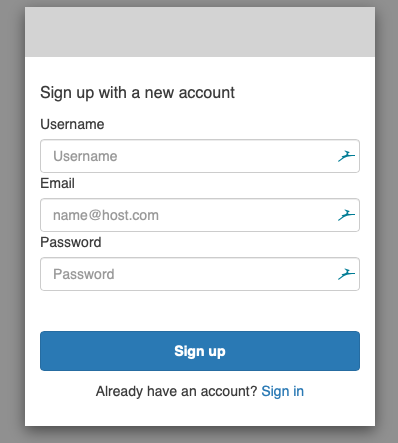

Módulo 2: Empezando en Sinopia
Traducción al español por Daniel Mugaburu
Alcance de este módulo
Este módulo abarca lo siguiente:
- Lo que puedes hacer en Sinopia
- Entornos de Sinopia y navegadores web compatibles
- Creando una cuenta de Sinopia
- Navegando por la interfaz de Sinopia
- Informando errores
¿Qué es Sinopia?
Sinopia es un entorno de creación de datos enlazados, desarrollado por Linked Data for Production(LD4P), financiado por la Fundación Mellon.
Sinopia permite a los catalogadores:
Catalogar en un entorno de datos enlazados sin tener que configurar y mantener herramientas localmente
Desarrollar las mejores prácticas relacionadas con la creación de datos enlazados
Explorar la catalogación cooperativa en un entorno de datos enlazados
“Stage” vs Producción
Hay dos entornos principales de Sinopia, Stage y Producción
Entorno de prueba de usuarios de Sinopia destinado para práctica.
Los usuarios pueden crear datos y no preocuparse por su calidad.
Las descripciones (y plantillas) pueden ser eliminadas.
Plantillas de PCC disponibles para prácticar (ver Módulo 4)
Entorno para la creación de metadatos a nivel de permanente.
Los metadatos en este repositorio se guardarán por un mínimo de 5 años después de que finalice la subvención LD4P3 (2026).
Las Plantillas PCC aún no están disponibles.
Desarrollo de Sinopia (Sinopia Development)
El desarrollo de Sinopia es principalmente para el uso de desarrolladores y propietarios de productos de Sinopia. El enfoque es probar actualizaciones de Sinopia antes de su lanzamiento.
También está siendo utilizado actualmente por un grupo de pruebas de Ex Libris Alma.
Por favor, solo use Sinopia Development si forma parte del grupo de pruebas de Ex Libris Alma
Cuentas
Necesita una cuenta de Sinopia para:
Crear descripciones
Editar descripciones
Explorar, buscar y visualizar descripciones existentes
Necesita cuentas separadas para Stage y Producción, por lo que si desea utilizar ambas, necesitará registrarse dos veces
- Puede usar el mismo nombre de usuario, correo electrónico y contraseña para ambos, si lo prefiere.
Instruciones crear una cuenta
- Vaya a stage.sinopia.io o sinopia.io
- Pulse en Solicitar Cuenta (Request Account)
- Ingrese un nombre de usuario, correo electrónico y contraseña.
- Pulse en el botón “Continuar”
- Recibirá un correo electrónico pidiéndole que confirme.
Acceder 
Crear 
Autenticar 
Confirmar 
Su nombre de usuario = ID de catalogador
Su nombre de usuario no sólo es su acceso a Sinopia cuando use plantillas de Sinopia. Este se se auto-llenará en todas sus descripciones como su ID de catalogador y otros usuarios lo verán.
Por favor, ¡téngalo en cuenta al elegir!

Después de iniciar sesión
Una vez que cree una cuenta e inicie la sesión, su pantalla lucirá así:

Pulse en el botón del Editor de Datos Vinculados (Linked Data Editor) para empezar a usar Sinopia.
Sitio de Ayuda de Sinopia
¡Su opinión es importante!
Desde el menú de Ayuda, pulse en Reportar un error para informar problemas, o Sugerir una nueva característica para proponer nuevas ideas para Sinopia.
Ambos enlaces abren un formulario en GitHub. Necesitará crear una cuenta gratuita de GitHub (www.github.com) para completar los formularios.
Puede hacer preguntas, informar problemas y sugerir ideas en el canal de Slack #sinopiaenelEspacio deTrabajoLD4 (ld4.slack.com)

Detalles técnicos de Sinopia
Este entrenamiento se basa en Sinopia versión 3.17.74, lanzada en diciembre de 2023, con correcciones de errores y actualizaciones lanzadas periódicamente desde entonces.
Si desea obtener más detalles sobre la última versión de Sinopia y ver notas sobre cada lanzamiento, visite el sitio de ayuda de Sinopia desde el menú de Ayuda, o vaya a help.sinopia.io, y luego pulse en Último lanzamiento.
Hay videos cortos que muestran las características de Sinopia disponibles en YouTube
Fin del Módulo 2
Gracias